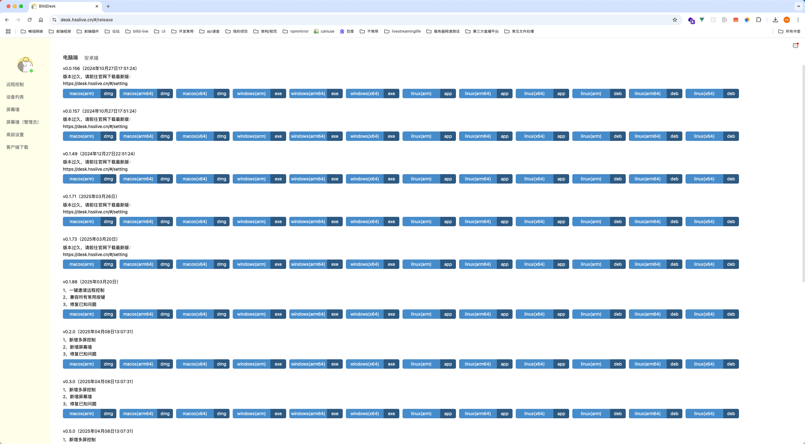

BilldDesk 快问快答：从个人远控到批量群控的万能选手
整理一篇关于 BilldDesk 的快问快答。开源架构、跨端远控、屏幕墙群控、Docker 私有化部署——这个远控软件到底值不值得装，9 个问题讲透。
整理一篇关于 BilldDesk 的快问快答。这个远控软件在开发者圈子里讨论度不低，开源架构、跨端远控、屏幕墙群控、Docker 私有化部署这些标签一起堆过来，容易让人分不清自己到底需不需要它。下面把最常被问到的九个问题逐个说清。
BilldDesk 到底是什么？一句话讲透
BilldDesk 是一款基于 WebRTC 的开源远程控制软件。客户端分四端——Windows 和 macOS 用 Electron 打包，Android 用 Flutter，网页端直接在浏览器里跑——信令和中继服务端用 Node.js 搭。定位上它不是又一个 ToDesk 或向日葵的替代品，而是一个"既能给个人用、又能给团队搭整套远控平台"的东西。开源版 MIT 许可免费拿来改，Pro 版客户端功能全开放但源码闭源。完整的产品概览和版本对比在 BilldDesk官网 上有详细说明。

和向日葵、ToDesk 比，差异在哪？
核心差异是架构开放程度。向日葵和 ToDesk 都是纯 SaaS，你只能用官方客户端连官方服务器，中继路径、数据流向全在黑盒里。BilldDesk 从设计第一天就把服务端组件拆成了独立模块——信令服务器、中继服务器、后台管理服务，每一个你都可以自己搭。个人图省事用官方 SaaS 就行，企业要数据不出内网就 Docker 拉起来跑自己的中继。功能上开源版做了裁剪，屏幕墙、驱动级键鼠、隐私屏这些高阶功能只在 Pro 版解锁，但日常远控、文件传输、聊天这些基础能力两边都有。
支持哪些平台？跨端体验怎么样？
桌面端覆盖 Windows 和 macOS，移动端只有 Android（iOS 端暂未跟进），另外有一个网页端可以在任何浏览器里发起远程。跨端连接走 WebRTC 的 P2P 直连，穿透失败才回退到中继转发——同局域网内直接走本地，连公网都不走，延迟基本就是局域网延迟。实际用下来桌面端体验最成熟，Android 端功能完整但部分高阶能力（比如屏幕墙被控端）还不支持，网页端适合临时应急但不适合重度使用。
怎么装？有没有门槛？
下载安装没有门槛。去官方下载拿对应平台的安装包，双击装完就能用。首次启动会分配一个设备码，被控端把设备码发给主控端，主控端输入设备码 + 密码就能发起远程。进阶配置在客户端的"高级设置"里——自定义中继服务器地址、切换中继、配置鉴权接口这些都在那里。唯一需要注意的是 macOS 端首次远程时系统会弹窗要求授予屏幕录制和辅助功能权限，不授权的话主控端只能看到黑屏。
核心用法就远程桌面那点事？有没有拿得出手的特色？
基础的远程桌面、文件传输、文字聊天这些都是标配。BilldDesk 真正有辨识度的特色有两个。一个是WebRTC 原生音视频通道——远控画面直接走 WebRTC，延迟低、带宽占用小，局域网内几乎感觉不到在远程。另一个是进程保活，Windows 端被控进程异常退出后会自动重启，适合无人值守的远程运维场景，不用担心被控端挂了再也连不上。
屏幕墙和群控功能值得买 Pro 吗？
屏幕墙是 Pro 版最核心的功能之一——在一个界面里同时显示多台被控设备的实时画面，像监控墙一样一眼扫过所有设备状态。点击任一画面可以切换到单控模式专注操作那台设备，也可以开启群控对多台设备同时发送相同的键鼠指令。官方宣传比连连控便宜 30%。如果你是云手机工作室、游戏工作室，或者有几十上百台设备需要批量管理，屏幕墙几乎是刚需——不用它你就得一台一台轮着看，效率差几个量级。但如果你只有三五台设备要远控，屏幕墙确实用不上，省点钱。

中继服务器老是卡？手动切换管用吗？
管用，而且操作很简单。进入"高级设置 → 网络设置 → 中继服务器"，能看到当前可用的中继服务器列表——官方维护了多个地区的节点，逐个选、建立远程连接、体验流畅度，找到最顺的那个固定下来就行。官方建议不要同时勾多个中继让它自动切换，一个个试反而更准。更完整的中继配置参数和自建教程可以翻 BilldDesk文档。另外要知道：P2P 直连成功了中继服务器根本不参与转发，这时切换中继没有任何效果。同局域网内远程也是直接走本地，完全不经过公网中继。所以先确认自己是不是真的走了中继再折腾切换——很多人切换完没变化是因为 P2P 已经连上了。
开源版和 Pro 版怎么选？
一句话：个人开发者用开源版先跑起来，有批量管理或企业需求再上 Pro。开源版功能裁剪了屏幕墙、批量群控、隐私屏、虚拟屏、驱动级键鼠、后台管理这些高阶功能，但日常远控、文件传输、基础鉴权都有，MIT 许可可以自由拿去二次开发。Pro 版客户端全部功能开放，源码闭源但客户端直接下载就能解锁。如果只是偶尔远程自己家里的电脑或朋友的电脑，开源版完全够用。如果有几十台设备要批量管、要屏幕墙群控、要驱动级键鼠模拟（游戏工作室常用），Pro 版是必选项。
私有化部署什么时候才需要搞？
日常用官方 SaaS 就行——零维护、按量付费、官方已经帮你扛了中继带宽和风控。但以下几种情况私有化部署的价值就出来了：对数据安全有硬性要求（政府、金融机构要求数据不出内网）、有批量设备管理需求不想被官方风控（云游戏/云手机运营商）、需要深度定制（比如要把远控集成进自己的管理后台）、或者官方中继服务器在你那边延迟太高想自己拉一条更近的。BilldDesk 私有化部署的门槛不算高，官方提供了 Docker 镜像和 docker-compose 配置文件，一条 docker-compose up -d 就能把信令、中继、后台服务全部拉起来。最低配置一台 1 核 2G 的服务器就能跑信令，中继服务器的瓶颈在上行带宽——1080P 远控一路大概占 3 到 10Mbps，按实际并发量预估就行。
最后一句：个人远控开源版先试试，有批量管理需求再考虑 Pro，数据安全敏感就 Docker 私有化，灵活度在同类远控里是第一梯队。开源版源码和配套资料在 GitHub、Gitee、GitCode 三个仓库都能拿到，国内访问 Gitee 和 GitCode 会更顺。